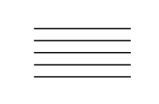
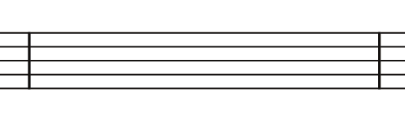
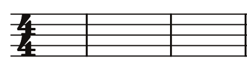
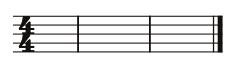
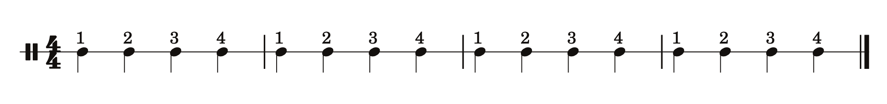
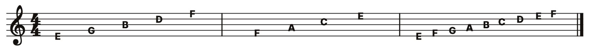

Chapter 29
Some Important Terms
To get started with learning how to read standard notation, there are a few terms we need to define.
Beat = the pulse of music
The beat of music is like your heart’s pulse. It is steady and consistent. If you listen to any song, you should be able to tap your foot to the beat of the song.
Quarter note = 1 beat of music
Written notes in sheet music not only tell you the pitch (ie. which fret of the guitar) but also how long you should play that note. The time it takes from one beat of music to occur up until the very next beat is exactly how long a quarter note should be played. The easiest quarter note to play is the one that is synced with the beat of the music.
Music Staff
The music staff has 5 lines and 4 spaces. Higher pitches are at the top of the staff. Lower pitches are at the bottom of the staff.

Bar Lines (or measure lines)
Bar lines (the vertical lines seen below) divide the music staff into measures. When music is divided into measures, it makes it easy to communicate with your bandmates where you want to start or end because they are often numbered.

Measures
Each measure contains a certain amount of beats. A common amount is simply 4 beats in a single measure. However, we will also learn to read music that has 2 beats in a measure and 3 beats in a measure. The quarter note gets its name because it’s very common for music to have 4 beats in a measure and therefore each beat is a quarter of the entire measure 1/4 + 1/4 + 1/4 + 1/4 = 1 (or the whole measure). So in this case, if a note = beat, then it is a quarter note.
Time Signature
There are two aspects to a time signature. First, the “time signature” tells us how many beats are in each measure. Again, it’s common to have just 4 but it’s possible to have 2, 3, 5, 6, or 7 beats in a measure too.
Second, the time signature tells us which type of note gets the pulse of the music. Again, the most common is the quarter note = 1 beat of music.
The top number = number of beats per measure (4). Bottom number = the type of note that gets the beat (1/4 note).

Double Bar
A double bar indicates the end of a piece of music or a transition within the music. The double bar is on the far right.

Counting
Here is a piece of music that lacks pitch and only indicates rhythm. With this type of sheet music, you can play a single note, a single drum, or other percussion instruments. Its time signature is “4/4” which means there are 4 beats per measure and that the quarter note gets the beat. Above each note, I’ve indicated how you should “count” the music. Notice that you start over with each measure. Feel free to clap this rhythm and count as you clap. Are you able to do so with a steady and consistent pulse?

Now, try playing the above with the just open E string. Tap your foot and play the open E string at the same time. Are you able to play with a steady pulse? Are you able to play the E string on the guitar and tap your foot at the same time? These are skills that I learned to do in elementary school on my first instrument (the saxophone). And so I believe that all guitarists should learn to tap their foot while the play. It will help you develop an internal sense of rhythm.
The Treble Clef
There are a variety of “clefs” and their job is to tell us which notes the spaces and lines represent. The Treble Clef symbol (at the very far left) tells us that the lines of the music staff represent the notes (from bottom to top): E, G, B, D, and F. It also tells us that the spaces of the music staff represent the notes (from bottom to top): F, A, C, and E.
